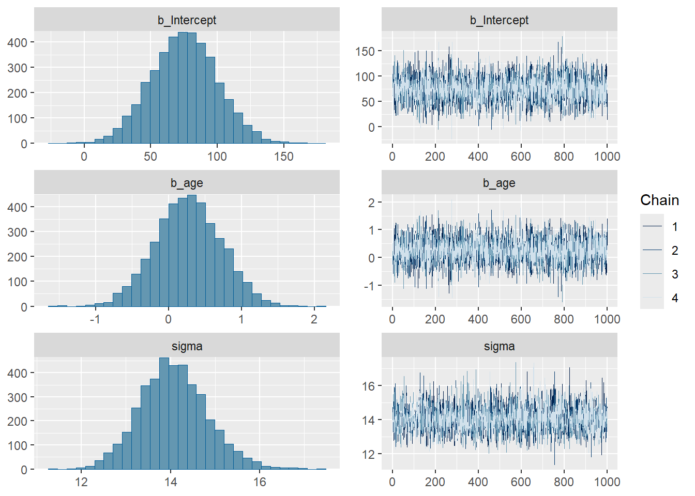
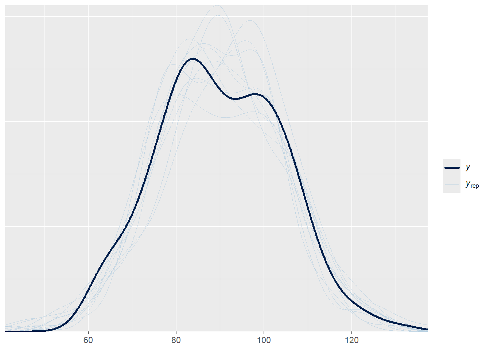
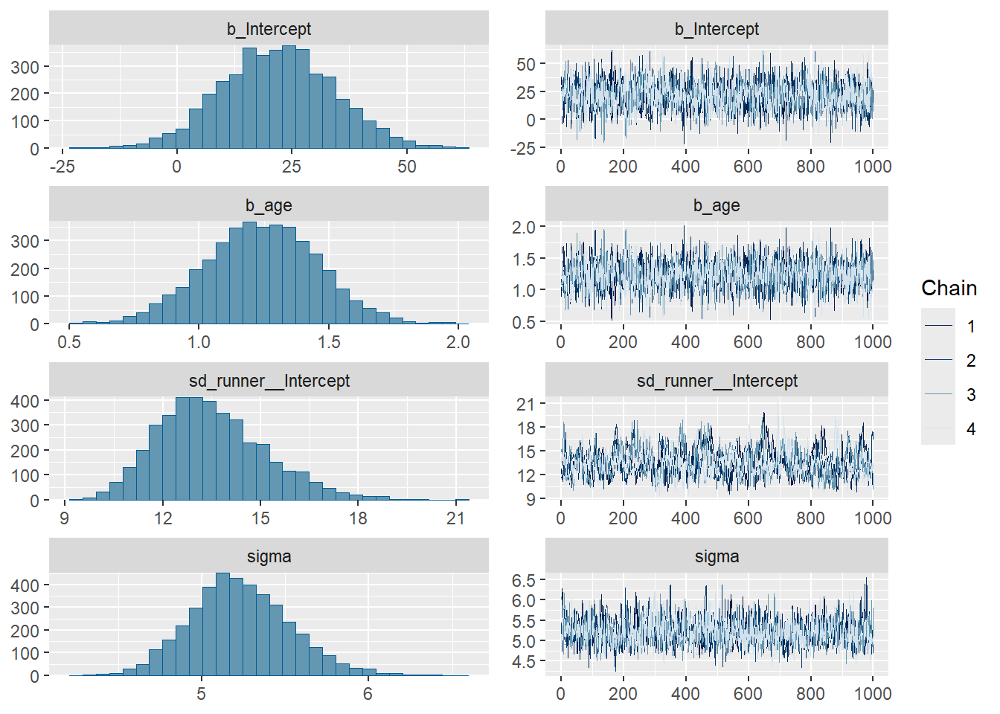
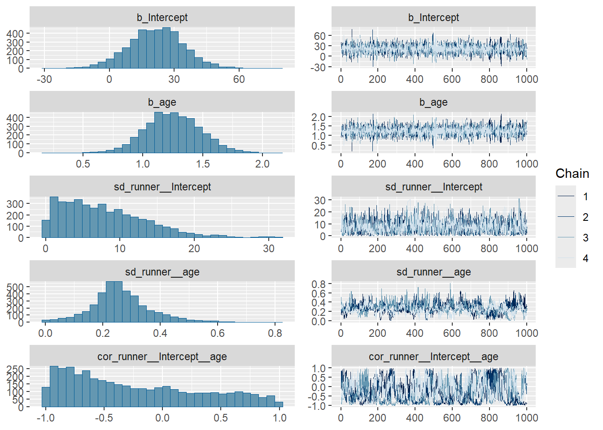
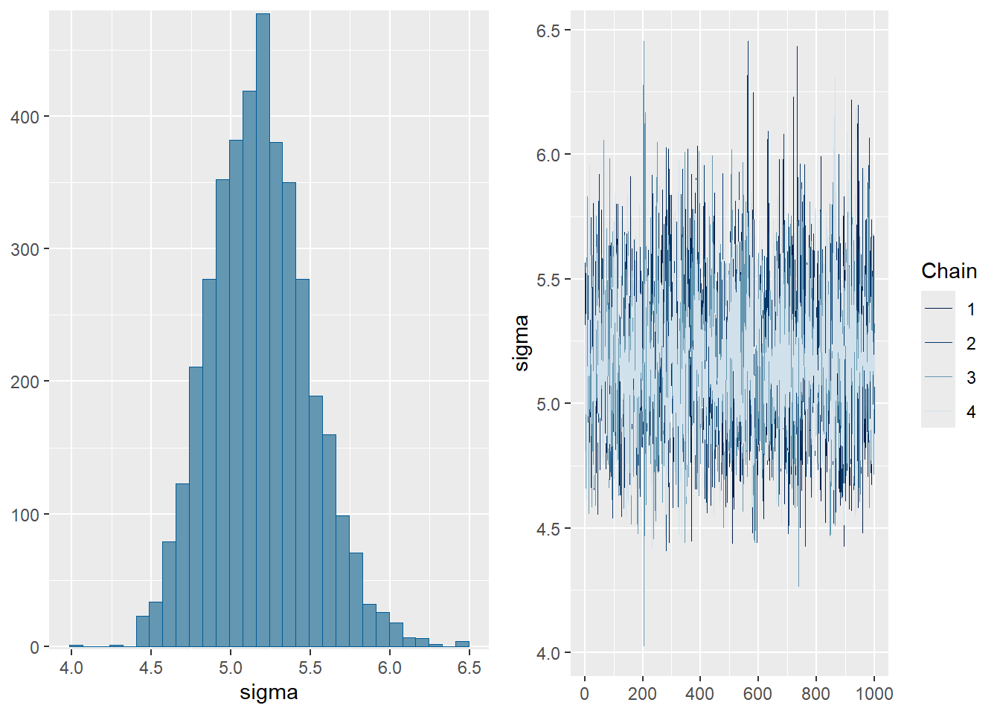
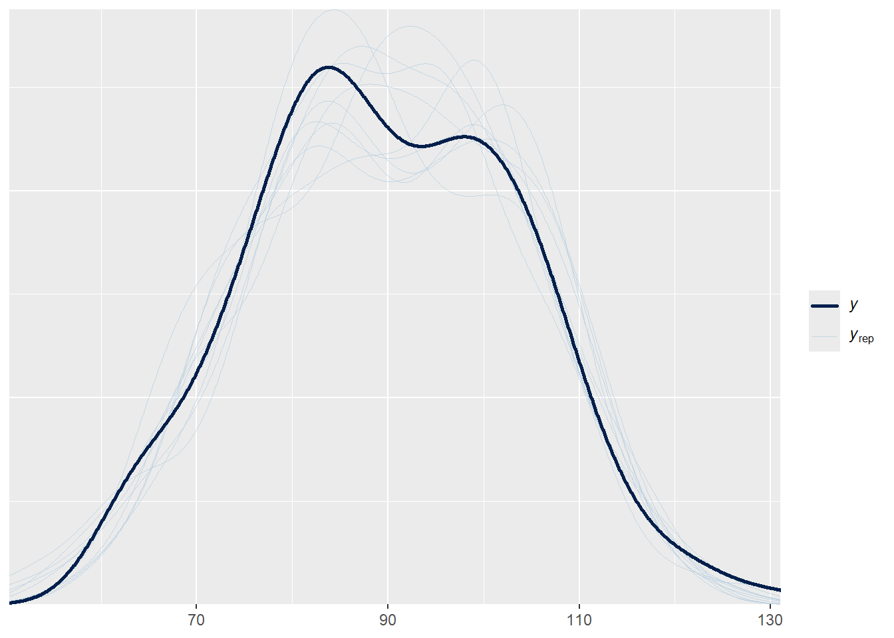

25Introduction to Bayesian Hierarchical Linear Models
We have studied a Bayesian simple linear regression model. We have also introduced some basic principles of hierarchical models. Now we’ll combine elements to formulate Bayesian hierarchical linear regression models.
We’ll consider the cherry_blossom_sample data in the bayesrules package which contains the net running times (in minutes) and age for participants in the annual 10-mile Cherry Blossom race held in Washington, D.C. Each runner in the sample is in their 50s or 60s.
Suppose we fit a Bayesian simple regression model of net on age. What do the slope and intercept parameters represent in context? What might be a reasonable prior? (You can assume that the age variable has been centered by subtracting the sample mean.)
Fit the model from the previous part (see the results in Section 17.1 of (Johnson et al. 2022)). Do the results seem reasonable? (Hint: consider the posterior distribution of the slope.)
Each of the runners in the sample has run the race in multiple years. What assumption of the simple linear regression model is violated?
Formulate a Bayesian hierarchical linear model which assumes the intercept (but not slope) varies by runner. What do the parameters represent in context?
Fit the model from the previous part (see the results in Section 17.2.4 of (Johnson et al. 2022)). What are some features of the analysis you would explore? Consider the posterior distribution of the slope associated with age; does the posterior distribution based on this hierarchical model seem more reasonable than the one based on the simple linear regression model?
Formulate a Bayesian hierarchical linear model which assumes both the intercept and the slope vary by runner. What do the parameters represent in context?
Fit the model from the previous part (see the results in Section 17.3.3 of (Johnson et al. 2022)). What are some features of the analysis you would explore?
Compare the two hierarchical regression models. What are some similarities? What are some differences?
25.1 Notes
library(brms)
Loading required package: Rcpp
Loading 'brms' package (version 2.23.0). Useful instructions
can be found by typing help('brms'). A more detailed introduction
to the package is available through vignette('brms_overview').
Attaching package: 'brms'
The following objects are masked from 'package:tidybayes':
dstudent_t, pstudent_t, qstudent_t, rstudent_t
The following object is masked from 'package:stats':
ar
library(bayesplot)
This is bayesplot version 1.14.0
- Online documentation and vignettes at mc-stan.org/bayesplot
- bayesplot theme set to bayesplot::theme_default()
* Does _not_ affect other ggplot2 plots
* See ?bayesplot_theme_set for details on theme setting
Attaching package: 'bayesplot'
The following object is masked from 'package:brms':
rhat
library(tidybayes)
25.1.1 Linear model
fit_lm <-brm(data = running, family =gaussian(), net ~1+ age)
Family: gaussian
Links: mu = identity
Formula: net ~ 1 + age
Data: running (Number of observations: 185)
Draws: 4 chains, each with iter = 2000; warmup = 1000; thin = 1;
total post-warmup draws = 4000
Regression Coefficients:
Estimate Est.Error l-95% CI u-95% CI Rhat Bulk_ESS Tail_ESS
Intercept 75.16 24.94 26.40 124.04 1.00 4648 2589
age 0.27 0.45 -0.62 1.15 1.00 4612 2572
Further Distributional Parameters:
Estimate Est.Error l-95% CI u-95% CI Rhat Bulk_ESS Tail_ESS
sigma 14.08 0.76 12.63 15.67 1.00 4149 2923
Draws were sampled using sampling(NUTS). For each parameter, Bulk_ESS
and Tail_ESS are effective sample size measures, and Rhat is the potential
scale reduction factor on split chains (at convergence, Rhat = 1).
plot(fit_lm)

pp_check(fit_lm)
Using 10 posterior draws for ppc type 'dens_overlay' by default.

25.1.2 Hierarchical model - random intercepts only
fit_hier1 <-brm(data = running,family =gaussian(), net ~1+ age + (1| runner))
Warning: Bulk Effective Samples Size (ESS) is too low, indicating posterior means and medians may be unreliable.
Running the chains for more iterations may help. See
https://mc-stan.org/misc/warnings.html#bulk-ess
Warning: Tail Effective Samples Size (ESS) is too low, indicating posterior variances and tail quantiles may be unreliable.
Running the chains for more iterations may help. See
https://mc-stan.org/misc/warnings.html#tail-ess
summary(fit_hier1)
Family: gaussian
Links: mu = identity
Formula: net ~ 1 + age + (1 | runner)
Data: running (Number of observations: 185)
Draws: 4 chains, each with iter = 2000; warmup = 1000; thin = 1;
total post-warmup draws = 4000
Multilevel Hyperparameters:
~runner (Number of levels: 36)
Estimate Est.Error l-95% CI u-95% CI Rhat Bulk_ESS Tail_ESS
sd(Intercept) 13.49 1.65 10.70 17.17 1.01 353 598
Regression Coefficients:
Estimate Est.Error l-95% CI u-95% CI Rhat Bulk_ESS Tail_ESS
Intercept 21.86 12.30 -1.58 46.00 1.00 1695 2625
age 1.24 0.22 0.81 1.67 1.00 2206 2705
Further Distributional Parameters:
Estimate Est.Error l-95% CI u-95% CI Rhat Bulk_ESS Tail_ESS
sigma 5.23 0.30 4.69 5.88 1.00 1850 2371
Draws were sampled using sampling(NUTS). For each parameter, Bulk_ESS
and Tail_ESS are effective sample size measures, and Rhat is the potential
scale reduction factor on split chains (at convergence, Rhat = 1).
plot(fit_hier1)

pp_check(fit_hier1)
Using 10 posterior draws for ppc type 'dens_overlay' by default.
Warning: There were 146 divergent transitions after warmup. See
https://mc-stan.org/misc/warnings.html#divergent-transitions-after-warmup
to find out why this is a problem and how to eliminate them.
Warning: Examine the pairs() plot to diagnose sampling problems
Warning: The largest R-hat is 1.05, indicating chains have not mixed.
Running the chains for more iterations may help. See
https://mc-stan.org/misc/warnings.html#r-hat
Warning: Bulk Effective Samples Size (ESS) is too low, indicating posterior means and medians may be unreliable.
Running the chains for more iterations may help. See
https://mc-stan.org/misc/warnings.html#bulk-ess
Warning: Tail Effective Samples Size (ESS) is too low, indicating posterior variances and tail quantiles may be unreliable.
Running the chains for more iterations may help. See
https://mc-stan.org/misc/warnings.html#tail-ess
summary(fit_hier2)
Warning: Parts of the model have not converged (some Rhats are > 1.05). Be
careful when analysing the results! We recommend running more iterations and/or
setting stronger priors.
Warning: There were 146 divergent transitions after warmup. Increasing
adapt_delta above 0.8 may help. See
http://mc-stan.org/misc/warnings.html#divergent-transitions-after-warmup
Family: gaussian
Links: mu = identity
Formula: net ~ 1 + age + (1 + age | runner)
Data: running (Number of observations: 185)
Draws: 4 chains, each with iter = 2000; warmup = 1000; thin = 1;
total post-warmup draws = 4000
Multilevel Hyperparameters:
~runner (Number of levels: 36)
Estimate Est.Error l-95% CI u-95% CI Rhat Bulk_ESS Tail_ESS
sd(Intercept) 7.84 5.68 0.34 21.04 1.00 1683 1312
sd(age) 0.26 0.10 0.06 0.50 1.04 165 493
cor(Intercept,age) -0.24 0.56 -0.97 0.90 1.05 108 313
Regression Coefficients:
Estimate Est.Error l-95% CI u-95% CI Rhat Bulk_ESS Tail_ESS
Intercept 21.44 12.65 -3.61 45.96 1.00 5397 2608
age 1.25 0.23 0.80 1.71 1.00 5157 2750
Further Distributional Parameters:
Estimate Est.Error l-95% CI u-95% CI Rhat Bulk_ESS Tail_ESS
sigma 5.18 0.31 4.62 5.81 1.00 3398 2347
Draws were sampled using sampling(NUTS). For each parameter, Bulk_ESS
and Tail_ESS are effective sample size measures, and Rhat is the potential
scale reduction factor on split chains (at convergence, Rhat = 1).
plot(fit_hier2)


pp_check(fit_hier2)
Using 10 posterior draws for ppc type 'dens_overlay' by default.

fit_hier2 |>spread_draws(cor_runner__Intercept__age) |>ggplot(aes(x = cor_runner__Intercept__age)) +geom_density(fill ="steelblue", alpha =0.4) +scale_x_continuous(limits =c(-1, 1)) +labs(x ="Correlation (intercept vs slope)",title ="Posterior of random effect correlation" )